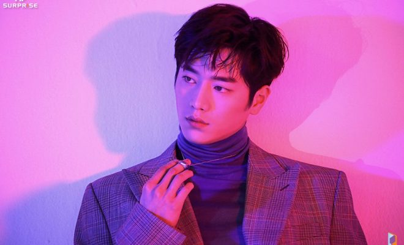

Seo Kang-Joon (born Lee Seung-hwan on October 12,1993), is a South Korean actor and singer who is a member of the group
5urprise. He gained recognition with his role in the television series Cheese in the Trap (2016) and has since starred in Entourage
(2016), Are You Human? (2018) and The Third Charm (2018).
Name: Seo Kang-Joon
Hangul: 서강준
Birth Name: Lee Seung-Hwan (이승환)
Born: October 12, 1993
Birth Place: South Korea
Height: 183 cm
Blood Type: AB
Instagram: seokj1012
Member of idol group 5urprise
Cheese in the Trap (tvN / 2016) - Baek In-Ho
Are You Human? | Neodo Inganini (KBS2 / 2018) - Nam Shin / Android Nam Shin III
The Third Charm | Je3ui Maeryeok (JTBC / 2018) - On Joon-Young
Watcher (OCN / 2019) - Kim Young-Koon
When the Weather is Fine | Nalssiga Joeumyeon Chajagagesseoyo (JTBC / 2020) - Lim Eun-Seob